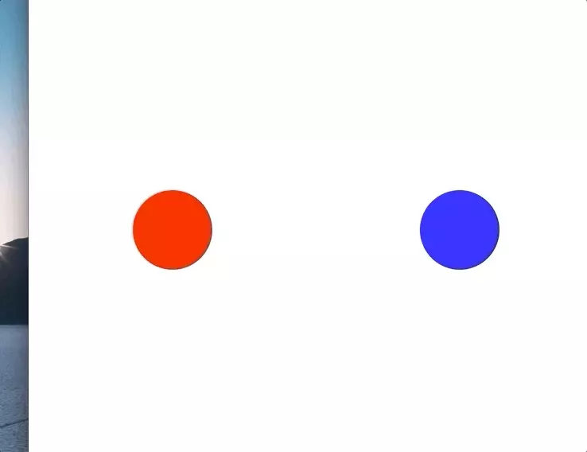

Vertical alignment in CSS can be difficult, one of the strategies for doing this is to use vertical-align which allows vertical alignment with an inline or table-cell box.
This can be used with media queries to create a responsive layout which switches between a horizontal and vertical layout depending on the size of the page.
A responsive layout like this is nice for mobile devices because it’ll rearrange between portrait and landscape mode, additionally it adjusts nicely when resizing windows on desktop.
Demo

Horizontal Layout
A horizontal layout is pretty easy with tables, we just create a div styled as a table
.table {
display: table;
table-layout:fixed;
width: 100%;
height: 100%;
}
add a row
.row {
display: table-row;
}
and add a few cells to the row using vertical-align to center our content in each cell
.cell {
display: table-cell;
vertical-align: middle;
text-align: center;
overflow: hidden;
}
Changing to a vertical layout
To change from a row with cells to a single column with rows we just need to do a basic pivot. In CSS we’ll change our row into a sub-table, each cell into a new row, and a new object for the new cells.
- table > row > cells
- table > table > rows > cells
Full Code Sample
<html>
<head>
<style type="text/css">
html, body {
height: 100%;
margin: 0;
}
.container {
display: table;
table-layout:fixed;
width: 100%;
height: 100%;
}
.pivot {
display: table-row;
}
.column-child {
display: table-cell;
vertical-align: middle;
text-align: center;
overflow: hidden;
}
@media (max-width: 500px) {
.pivot {
display: table;
table-layout: fixed;
width: 100%;
height: 100%;
}
.column-child {
display: table-row;
}
.row-child {
display: table-cell;
vertical-align: middle;
text-align: center;
overflow: hidden;
}
}
.circle {
height: 100px;
width: 100px;
margin: 0 auto;
border-radius: 50%;
}
</style>
</head>
<body>
<div class="container">
<div class="pivot">
<div class="column-child">
<div class="row-child">
<div class="circle" style="background: red;"></div>
</div>
</div>
<div class="column-child">
<div class="row-child">
<div class="circle" style="background: blue;"></div>
</div>
</div>
</div>
</div>
</body>
</html>